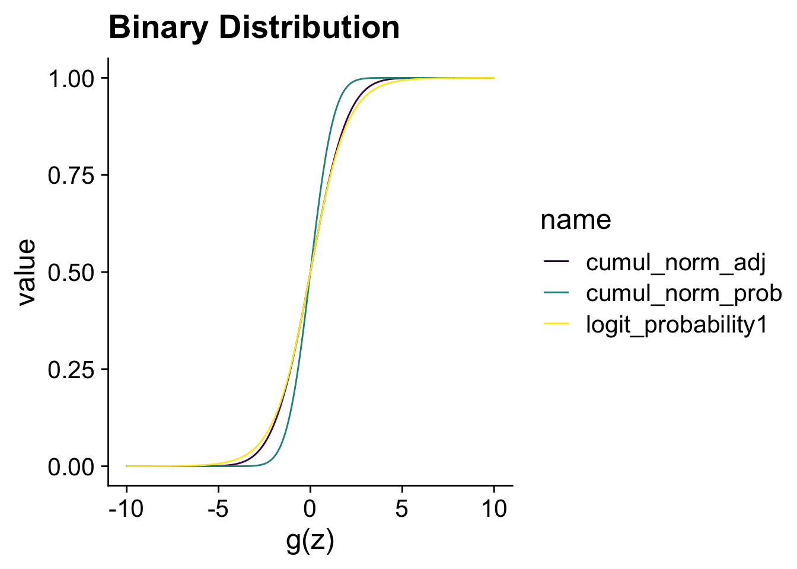

library(tidyverse)
library(here)
library(cowplot)
theme_set(theme_cowplot(font_size = 18))
i_am("generalised/introduction.qmd")here() starts at /Users/stijnmasschelein/Library/CloudStorage/Dropbox/Teaching/lecturenotes/method_packageThe question in this section is how we should deal with outcome variables that are not continuous or restricted to be positive. I will limit the applications to the most common examples: (1) binary outcome variables and (2) positive outcome variables. Examples of binary outcome variables are the decision to disclose information, or merge a company. Positive outcome variables are variables such as employee salaries or the market value of a company.
This is a fairly contentious topic where different literature streams have different expectations and norms for what is appropriate. This is by no means a complete overview of the topic. My aim is to give you my perspective and to give you enough tools to be able to decide what is most appropriate for your research and to explain to assessors why you made those choices.
The basic problem is the following. In our typical linear model, the outcome variable can take on any value between \(-\infty\) and \(+\infty\).
\[ y_i = \alpha + \beta x_i + \epsilon_i \]
If we want to make sure that \(y_i\) is restricted to a certain domain, for instance between 0 and 1, we can use a transformation function on the linear model. These transformed linear models are often called generalised linear models.
\[ y_i = g(\alpha + \beta x_i + \epsilon_i) \]
You can also think of the inverse of the transformation function as transforming the outcome so that it can take all positive and negative values. This is implicitly what we have done earlier when we used the logarithmic transformation in our earlier discussion on what the appropriate measure is for pay-performance sensitivity. In the second week, we discussed the importance of theory to determine what the right measure is according to our research question. In this week, we are asking the question whether we are interested in \(y_i\) or in the transformation \(g^{-1}(y_i)\).
\[ g^{-1}(y_i) = \alpha + \beta x_i + \epsilon_i \]
The discussion should also remind you of the difference between prediction and parameter estimation at the start of the machine learning chapter. The issue of the mismatch between the domain of the linear model and the outcome variable is less of an issue if we are really interested in estimating the parameter \(\beta\). It really is a problem if we are trying to predict the outcome variable \(y\) because we know that we are going to get predictions that are impossible. In the reminder of this chapter I will focus on parameter estimation because that is a more common research question in finance and accounting research. That does not mean that prediction of restricted outcome variables is not important. Indeed, regularised versions of generalised linear models for binary outcome variables are popular classification models. They are fairly easy to implement in the tidymodels framework we have used in the machine learning application.
library(tidyverse)
library(here)
library(cowplot)
theme_set(theme_cowplot(font_size = 18))
i_am("generalised/introduction.qmd")here() starts at /Users/stijnmasschelein/Library/CloudStorage/Dropbox/Teaching/lecturenotes/method_packageIn this section, I will visualise the most common transformation functions in the accounting and finance literature. I start with the logistic and probit transformations which are commonly used to model binary variables. We can think of those variables as having two values either \(y_i = 1\) or \(y_i = 0\). In this case, we can model the probability \(P(y_i = 1) = g(\alpha + \beta x_i + \epsilon_i)\) and then use a binomial distribution to predict 1s and 0s. The logistic and probit transformation are two possible options for the function \(g\).
The logistic transformation transforms the linear scale, \(z_i = \alpha + \beta x_i + \epsilon_i\), to \(\frac{e^{z_i}}{1+ e^{z_i}}\). R has an inbuilt function plogis that does the transformation for us but you can obviously just write the transformation yourself. The code below shows that you get identical results.
N <- 1001
logit <-
tibble(
linear_scale = seq(from = -10, to = 10, length.out = N)) %>%
mutate(
logit_probability1 = exp(linear_scale)/(1 + exp(linear_scale)),
logit_probability2 = plogis(linear_scale),
)
glimpse(logit)Rows: 1,001
Columns: 3
$ linear_scale <dbl> -10.00, -9.98, -9.96, -9.94, -9.92, -9.90, -9.88, -…
$ logit_probability1 <dbl> 4.539787e-05, 4.631492e-05, 4.725050e-05, 4.820498e…
$ logit_probability2 <dbl> 4.539787e-05, 4.631492e-05, 4.725050e-05, 4.820498e…ggplot(logit, aes(y = logit_probability1, x = linear_scale)) +
geom_line() +
xlab("z") + ylab("logistic(z)")In the figure, you can see how the transformed value stays between 0 and 1, exactly as we would want from a probability. Also notice how the impact of an increase of 1 on the linear scale \(z\) varies depending on the starting value of \(z\). This is because the logistic transformation is an non-linear transformation and it makes the interpretation of the the coefficients in our model more difficult.
There is another function that is commonly used to transform the linear scale to the probability scale, the cumulative normal or probit function. We need to take a short detour to the normal distribution to explain the cumulative normal distribution to explain this function. You can see a normal distribution below where the lower 90% of the distribution is filled in yellow while the upper 10% is filled in blue. The value for \(x\) associated with the 90% is approximately 1.28. That means that we can associate a probability with each value of \(x\) which tells us what the probability is that a randomly generated normal value is smaller than \(x\). This function is the probit function.
tibble(x = seq(from = -3, to = 3, length.out = N)) %>%
mutate(dnorm = dnorm(x),
fill = if_else(x < qnorm(0.90), "below", "above")) %>%
ggplot(aes(y = dnorm, x = x, fill = fill)) +
geom_area() +
scale_fill_viridis_d() +
ggtitle("Normal Distribution")
In the next code, I show the cumulative probability function for a normal distribution with mean 0 and standard deviation 1. You can see that it look quite similar to the logistic transformation. In the next, section we will compare the two transformations directly.
cumul_norm <- logit %>%
mutate(cumul_norm_prob = pnorm(linear_scale))
ggplot(cumul_norm, aes(y = cumul_norm_prob, x = linear_scale)) +
geom_line() +
xlab("z") + ylab("cumulative_normal(z)")
The main reason to show the comparison is to highlight that when we divide \(z\) by 1.6 the probit transformation is very similar to the logistic transformation. This probit transformation is also equivalent to the cumulative normal probability for a normal distribution with mean 0 and standard deviation 1.6. In other words, the difference between the logistic or probit regression is often inconsequential.
combination <- cumul_norm %>%
mutate(cumul_norm_adj = pnorm(linear_scale/1.6)) %>%
select(-logit_probability2) %>%
pivot_longer(c(logit_probability1, cumul_norm_prob, cumul_norm_adj))
ggplot(combination, aes(y = value, x = linear_scale,
colour = name)) +
scale_color_viridis_d() +
geom_line() +
xlab("z") + xlab("g(z)") + ggtitle("Binary Distribution")
The choice between a logistic regression or a probit regression is often not consequential. If your research question requires you to model a binary variable, the choice between probit or logistic regression can be based on what the preferred choice is in your research area.
The poisson distribution (rpois) is originally developed to model the number of independent events with a fixed rate happening in a given amount of time. For instance, the number of acquisitions that a firm does in a year or the number of patents they obtained. It is the general workhorse model for any count variable. As, you can see in the figure below, you can think of the poisson distribution as discrete random distribution (the dots) around the the exponentiated linear model (the line). It will be important further on to think of a poisson regression as a model for
\[ g^{-1}(E(y_i | x_i)) = \alpha + \beta x_i \]
where \(g^{-1}(z) = log(z)\) and \(g(z) = exp(z)\). That is, the logarithm of the expected value of \(y_i\) is given by \(\alpha + \beta x_i\). Moreover, in contrast to the exponent, the poisson distribution can give 0 values1.
poisson <-
tibble(linear_scale = seq(from = -3, to = 3, length.out = N)) %>%
mutate(exp_scale = exp(linear_scale),
poisson = rpois(N, exp_scale))
ggplot(poisson, aes(y = exp_scale, x = linear_scale)) +
geom_line() +
geom_point(aes(y = poisson)) +
xlab("z") + ylab("g(z)") + ggtitle("Poisson Distribution")
In the first lecture, I transformed a variable on the logarithm scale but that lead to problems with 0 values. I used a common hack by adding 1 to the variable and then take the logarithm. On the next page, we will see that does not always give desirable results.↩︎